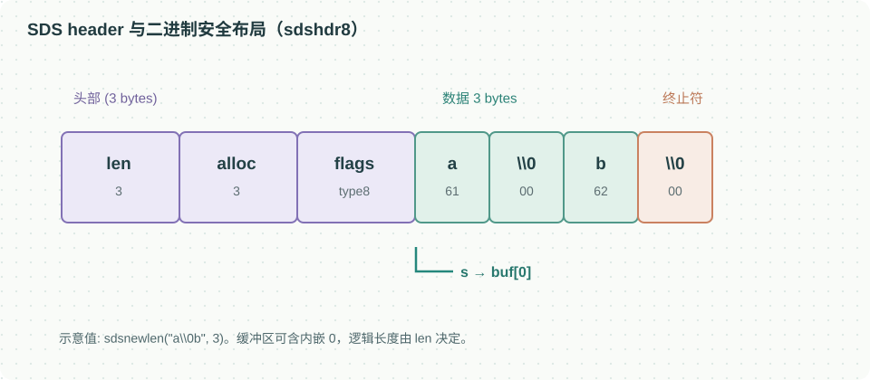
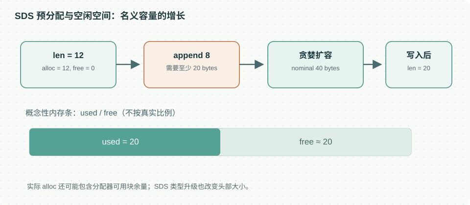

Chapter 04 / Redis Source Anatomy
SDS 动态字符串：在 C 指针前藏一张内存地图
从 a\0b 三字节案例开始，解释五种 SDS 头部、O(1) 长度、可用容量和贪婪扩容的版本细节。
strlen 的问题不止是 O(n)
C 的 char * 通过第一个 NUL 字节结束字符串，无法把任意二进制数据与其长度一起自然表示。假设值的三个字节是 0x61 0x00 0x62（a\0b），直接调用 strlen 会得到 1，而 Redis 必须保存全部三个字节。Redis 还频繁需要知道字符串长度和剩余容量，以决定能否追加而不重新分配。
SDS（Simple Dynamic String）的核心变化很小：把长度放到头部元数据里，让 buf 仍然是可供 C API 使用的字符指针。这样 sdslen 不需要扫描字符串，追加可检查空闲容量，二进制 NUL 不再代表逻辑结束。
内存地图：s 指向 buf，不指向头部

| 头部类型 | len / alloc 存放方式 | 读取特点 |
|---|---|---|
sdshdr5 | 长度编码在 flags 高 5 位，未存独立 alloc | 不保存空闲容量，增长时常升级为 sdshdr8 |
sdshdr8 | 各为 uint8_t | 适合较短可增长字符串 |
sdshdr16 | 各为 uint16_t | 中型缓冲 |
sdshdr32 | 各为 uint32_t | 大型缓冲 |
sdshdr64 | 各为 uint64_t | 超大缓冲 |
头部由 __attribute__((__packed__)) 定义；s[-1] 拿到 flags，再根据类型解码长度和分配容量。sdshdr5 并非“完全不用”，初始化很短且不预期追加的 SDS 可能使用它；但需要扩容时会避开它，因为它没有可用空闲容量字段。
/* 摘要式字段图，不是完整源码摘录 */
struct sdshdr8 {
uint8_t len; /* 已使用字节数 */
uint8_t alloc; /* buf 容量，不含结尾 NUL */
unsigned char flags;
char buf[];
};SDS 指针暴露的是 buf 开始位置，不是头部起始地址。这对释放和 realloc 尤其重要：必须按 flags 找到正确的头部偏移。
扩容公式与名义容量
查看 Redis 7.2.4 的 _sdsMakeRoomFor(s, addlen, greedy)：若当前剩余空间足够，直接返回；否则计算 newlen = len + addlen。当 greedy == 1，如果该需求小于 SDS_MAX_PREALLOC（1 MiB），名义新容量按两倍计算；否则在需求上再增加 1 MiB。它还会根据大小选择新的头部类型，并可能调用 realloc 或 allocate-copy-free。

交互用于追踪概念路径，不替代对实际二进制文件的单步验证。
真实实现有溢出检查、头部类型切换与 allocator usable size 的处理，因此不要将交互中的名义值当成真实程序输出。sdsRemoveFreeSpace 等 API 可主动收缩空间，日常缩短字符串不会必然马上把容量归还。
SDS 头部类型 ≠ Redis 字符串对象编码
非常容易混淆的两个枚举：SDS 中的 SDS_TYPE_5/8/16/32/64 描述内存头部；Redis 对象中的 OBJ_ENCODING_INT / EMBSTR / RAW 描述值对象如何存放。embstr 优化的是 redisObject 与 SDS 的邻近分配布局，int 则适用于特定整数值。它们并不是五种 sdshdr 的“别名”。
当你执行 OBJECT ENCODING key，看到的是对象编码，而不是 SDS flags。低层 SDS 也会被 key、脚本、网络输入缓冲区等结构复用，并不只有 String 命令会用 SDS。
二进制安全的三字节实验
验证二进制安全，最好送入含 NUL 的字节流，而不是依赖命令行参数中的转义。redis-cli -x 可把标准输入原始字节作为最后一个参数：
./src/redis-server --bind 127.0.0.1 --port 6390 --save "" --appendonly no
printf 'a\0b' | ./src/redis-cli -p 6390 -x SET demo:binary
./src/redis-cli -p 6390 STRLEN demo:binary
./src/redis-cli -p 6390 OBJECT ENCODING demo:binary
./src/redis-cli -p 6390 SHUTDOWN NOSAVESTRLEN 预期为 3。编码结果取决于对象创建路径和版本，不应据此反推它使用 sdshdr8 还是 sdshdr5。想做 C 级断言，可以针对 sdsnewlen 传入带 NUL 的三个字节，并检验 sdslen 与 memcmp；这应在匹配源码的独立单元测试环境中执行。
何时 SDS 的优势并不能解决问题？
SDS 解决了长度记录与容量管理，不会自动保证用户对外部指针的错误写入是安全的。把 buf 当成无限空间仍会造成越界；手动修改 buf 但忘记维护 len，也会导致元数据与内容不一致。多线程共享时还需要上层同步，SDS 自身并不是并发容器。
理解 SDS 的核心是三个长度的区分：len（逻辑数据）、alloc（可写数据容量）与尾部兼容 NUL。下一章，listpack 将继续使用“在连续字节区里加少量元数据”的思想，但用于存储多个元素。
源码与参考
下列实现均指向 Redis 7.2.4 的固定源码标签；命令与内存行为必须以所运行的实际版本和配置为准。